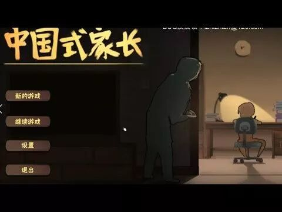
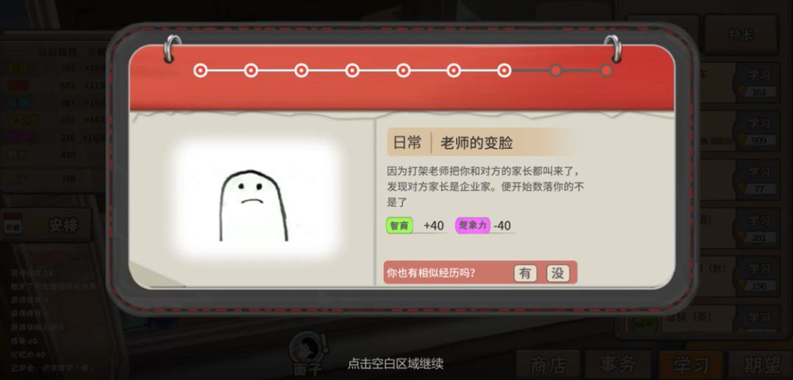
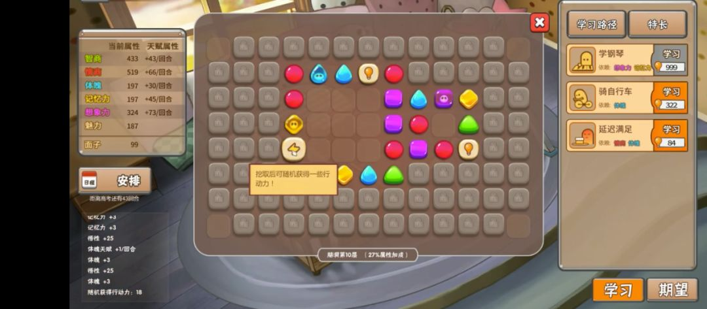
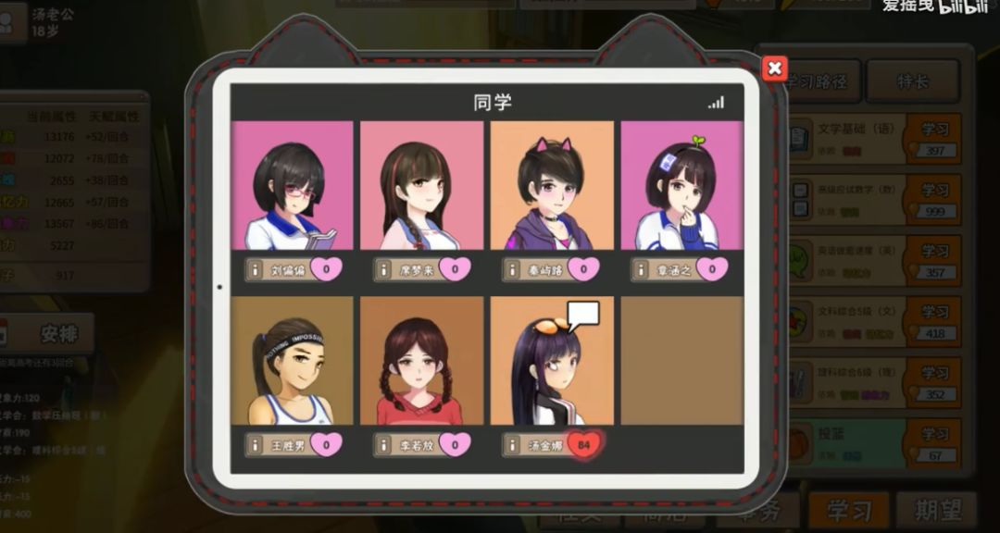
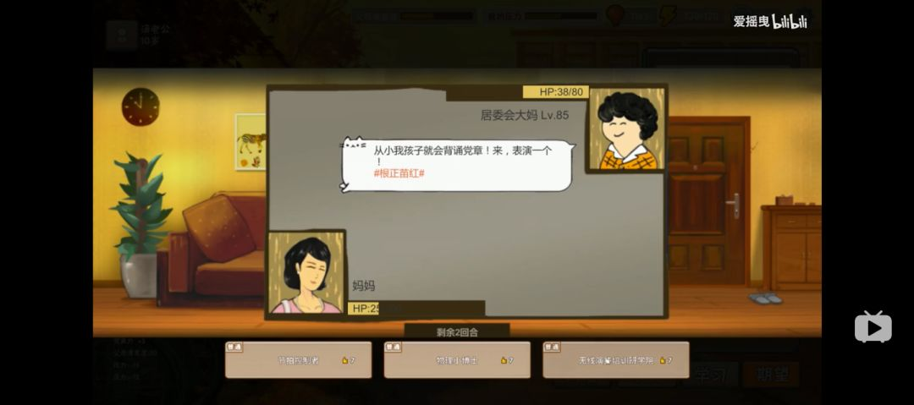
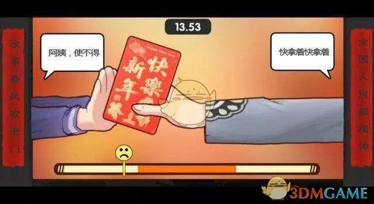
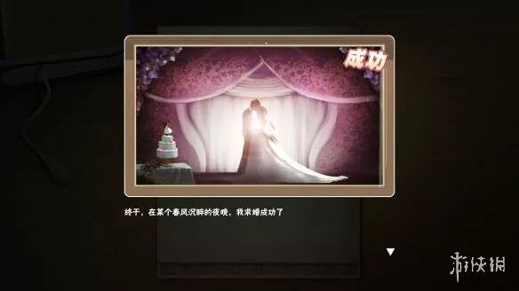
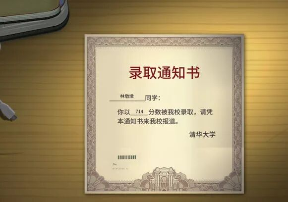

前几天沉迷于一款叫《中国式家长》的游戏（这几天正在沉迷于《太吾绘卷》，话说两款游戏都是用Unity做的），基本空闲的时间都花在这款游戏上了。这两款游戏真的让我找回了小时候在家偷偷打仙剑的那种快感，一种享受中国文化孕育出的优质作品的幸福感。
在《中国式家长》中，玩家扮演的是一个在中国式家庭中成长的孩子。在他从出生一直到18岁高考的这段时期，他将会经历我们从小大多经历过的日常。婴儿时期常见的父母吵架，婆媳争执，幼儿园老师奖励的大红花，小学要学的四则运算，中学开始的早恋，高中经历的高考，每一个事件以及任务都让我感到亲切不已。

当然不同玩家的小时候肯定都不太一样，比如并不是每个人都被学校里的小混混欺负过，也并不是每个人都有被熊孩子弄坏心爱玩具的经历。所以游戏中会很贴心地在发生某些事件后让你选择你是否真的经历过这件事情，在你选择后会告诉你你跟多少人也有相同的经历。

玩家随着自己的成长，可以做的事情会越来越多。比如当你刚被生下来的时候，你能做的只有翻身和跟着音乐拍手。等你稍微长大一点，就开始可以学说话，走路，甚至跑步，骑自行车。
学习大部分的事情都需要努力，在游戏中体现为需要消耗一定量的悟性（也有不需要悟性的，比如看电视会自动学会）。孩子相关的属性越高，消耗的悟性就越少（比如如果孩子的体魄很高，他学走路消耗的悟性就会很少）。如下图右侧所示。
孩子的基本属性有几种提高的方式。每个回合我们都可以点击孩子的头，就会弹出一个如下图中间的方框。不同颜色的小块对应不同的属性，只要点击对应的小块就能提升相应的属性。当然每回合能点击的次数是有限的。第二种方法是消耗悟性学习新的技能，比如如果新学会了骑自行车，体魄就会增加。第三种方式比较随机，就是每回合都会出现的各种各样的事件。如果你经历了一些好的事件的话，某些属性就有可能增加。

游戏中也有丰富的早恋系统，有多达7位女孩子可以攻略。不同的女生都有不同的性格以及家庭背景。比如班里的学习委员刘偏偏就是一位热爱学习的女生，所以也会喜欢高智商的男同学。她平时学习很刻苦，但是她的妈妈要求更严格。只要没有考到第一名，就算拿了班上的第三名，她的妈妈都会严厉地批评她，甚至把玩家找出来谈话。又比如班上的有钱同学汤金娜，其实妈妈是跟了一个土豪，结果后来土豪跑路了。。。其实班上最有钱的同学是有艺术特长的秦屿路，其实还真的跟现实蛮像的。

我特别喜欢的是面子系统。简单来说就是当家里来了客人的时候，两边的大人就开始拿孩子当成比拼的对象了。孩子会的特长越多越厉害，家长就越有面子，自然对方也就被比下去了，就好像回合制的格斗游戏一样。游戏中的面子系统就是类似于这样的基于面子的格斗游戏。孩子在日常生活中总会累积不同的特长（比如要是小时候翻身特别多，就会获得《咸鱼的翻滚》特长），可以像招式一样打出去。

还有一个蛮有意思的是红包系统。我们知道过年的时候我们都要收红包，但是收红包的时候我们总是要再三推辞。那是不是其实有一个最合适的推辞的力度需要把握呢？于是我们就得到了这样一个收红包的小游戏。

类似这样好玩的系统还有很多，比如学校楼下的小卖部，一边卖着我们喜欢的零食和玩具，一边搞一些小型的抽奖活动。又比如遗传系统。游戏中玩家一旦到达18岁就要进入高考，根据玩家对于各种科目的不同掌握程度，将会得到一个对应的高考分数。得到分数以后玩家的人生将被快进，高考分数会直接决定你的未来工作以及对应的收入，而你的下一代每天的零花钱将会和你这一代的收入挂钩。玩家谈的早恋也不可或缺，要是恋爱谈得好，就可以大大降低成为单身狗的概率。

那么是不是我们可以一直学习呢？其实要想上清华北大，勤勤恳恳学习根本没有用。我第一次玩的时候啥也没干，就一直在好好学习，结果只上了河北农业大学。游戏后期的某些学科的技能要求的智商实在是太高了，老老实实学习对应的科目实在是很难在18年里达到。幸好游戏里可以向父母索求黄冈密卷，学习黄冈密卷可以大幅增加智商和情商等等考试所需的属性。加上前期适当地积攒足够的悟性，就可以满足最终上清华的愿望了。

后记：
我记得知乎上曾经看到过一个帖子，是问为什么国产游戏目前没有类似于《巫师3》那种高自由度的武侠/仙侠题材的动作游戏。答案说的是由于本世纪初盗版的大肆流行，加上网游大潮，经典的单机游戏厂商基本都被压垮了。类似的还有中国的音乐产业。由于盗版的原因，整个中国的音乐产业遭到了沉重的打击，以至于直到现在我们的音乐界的一线歌星还有一大半是2000年左右出道的（也就是说后续出道的那些歌手由于音乐产业不行，很难得到相应的资源）。
近年来随着移动支付的普及，付费服务的接受度的提升，好的音乐渐渐有了生存下去的土壤。我们会发现近些年来好听的歌以及创作这些歌的歌手又在不断地涌现。
同样随着Steam平台的普及，国产单机游戏开始有了一个获利的可能性。随着我们越来越多地去Steam上下载单机游戏并且为这些游戏付费，越来越多的好的国产游戏作品开始不断地涌现。
记得严伯钧曾经在他的西方艺术史上讲到，文艺复兴能够起来，能够有这么多的传世佳作，首要的功臣并不是那些绝顶的艺术家，而要感谢圣方济各。
正是由于圣方济各推行了全新的基督教思想，这才给予了文艺复兴时期的艺术家们生长的土壤。并不是文艺复兴之前的艺术家们就没有才能了，而是因为他们没有生长的土壤，所以就算有相应的才能也无法施展。
感谢这个时代给我们的独立游戏以成长的土壤。